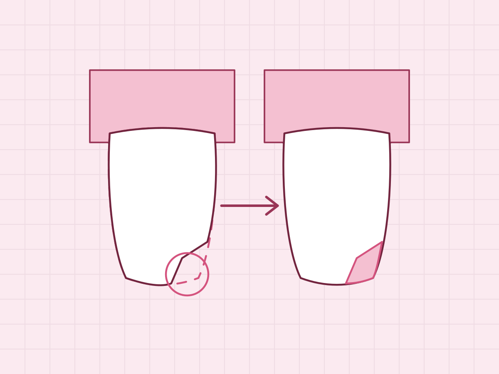
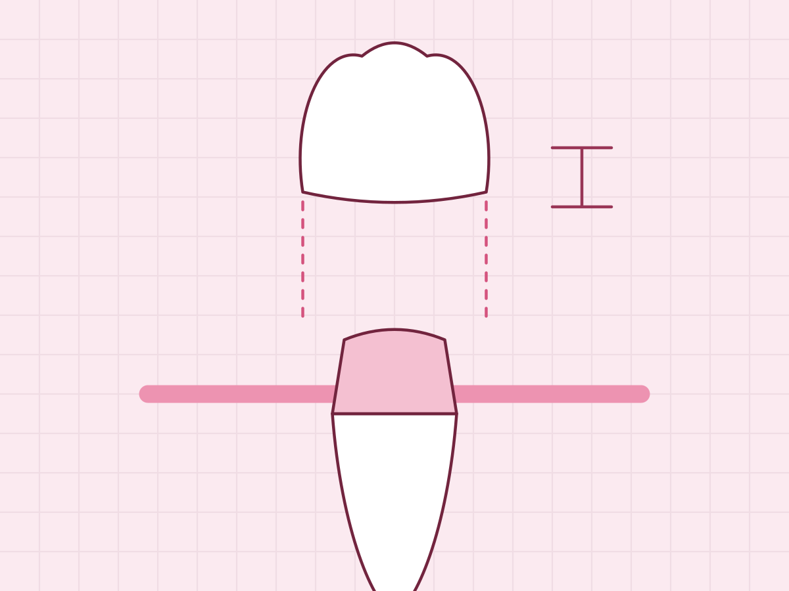
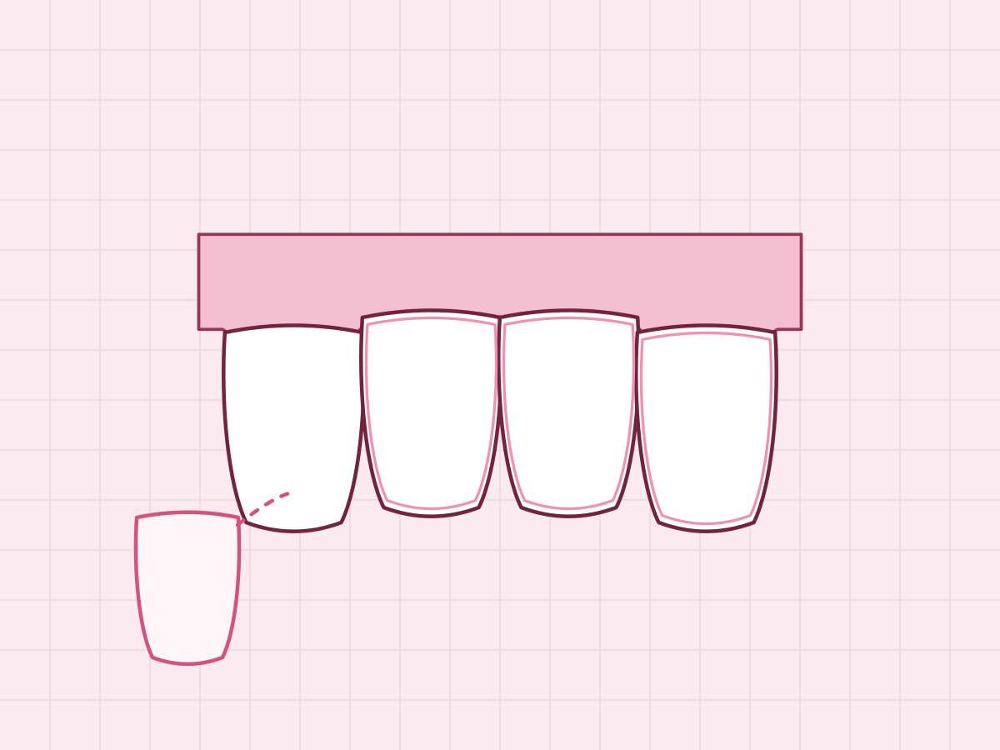
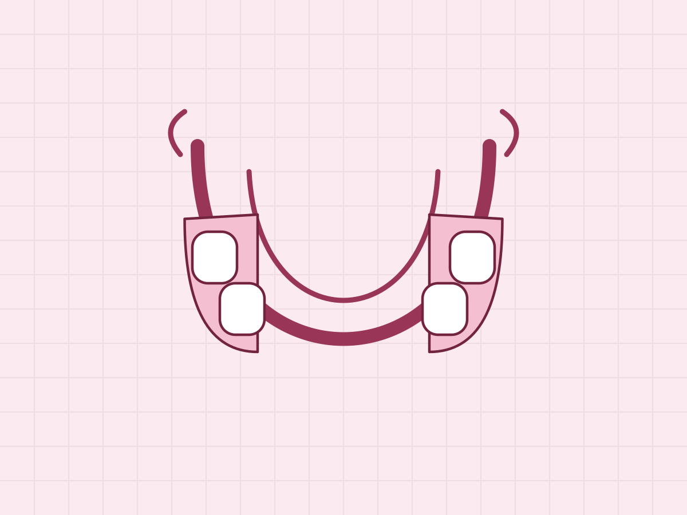
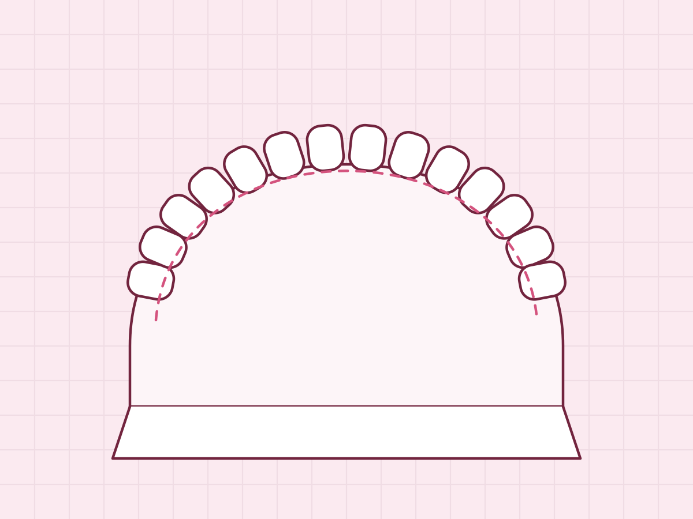
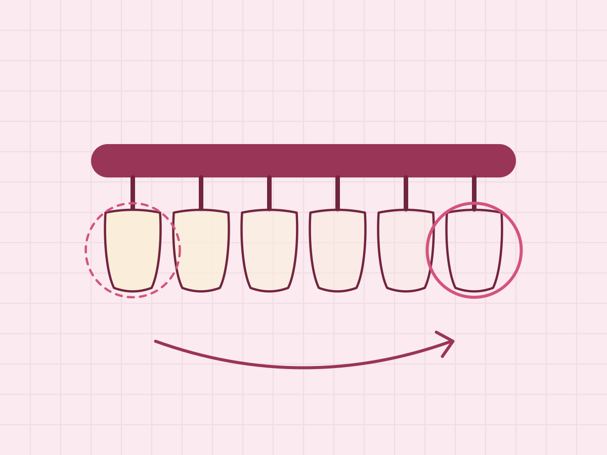

Las fotos se ven en este orden en la página de inicio y en la galería. Hay 6 de 12.
Fotos publicadas
-

Posición 1Resina en un incisivo, antes y después.
Consentimiento declarado por Admin Sistema el 5 nov 2026
-

Posición 2Corona de porcelana en un premolar.
Sin pacientes en la foto
-

Posición 3Carillas en los cuatro incisivos superiores.
Consentimiento declarado por Admin Sistema el 3 nov 2026
-

Posición 4Prótesis parcial removible, recién salida del laboratorio.
Sin pacientes en la foto
-

Posición 5Modelo de yeso para planear una ortodoncia.
Sin pacientes en la foto
-

Posición 6Blanqueamiento: el tono antes y después.
Consentimiento declarado por Admin Sistema el 28 oct 2026
Subir foto
No se publicó la foto. Corrige lo marcado y vuelve a subirla.